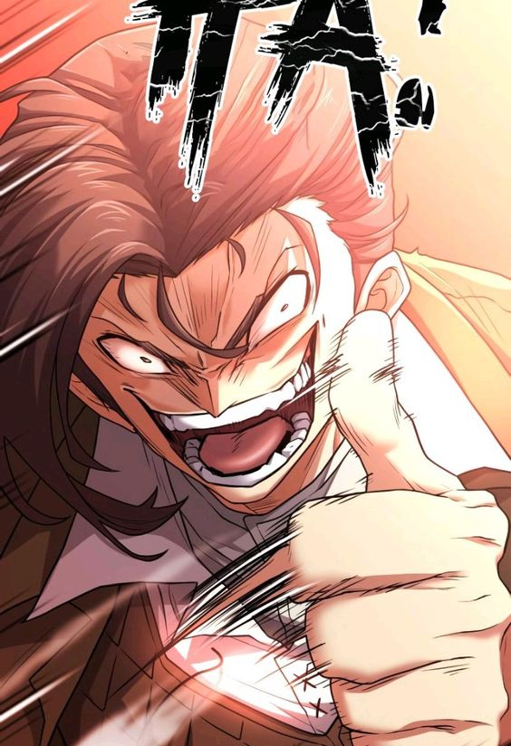

heroe o villano
Lloyd Frontera es un destacado ingeniero de construcción responsable del desarrollo
del condado de Frontera. Es el hijo mayor de Arcos y Marbella Frontera, el hermano mayor de Julián
Frontera y el protagonista principal de The Greatest Estate Developer.
Su cuerpo actualmente está habitado por Suho Kim. El Lloyd Frontera original fue extraído a la fuerza de
su cuerpo original y, después de un tiempo de espera, fue enviado a vagar por el infierno sin un
propósito.Lloyd tiene piel clara, ojos verdes y cabello castaño en su mayor parte peinado hacia un lado.
Se le ha descrito repetidamente con cara de sirviente, con un chiste de que a menudo se confunde a
Javier Asrahan con un noble en su lugar, y casi todas las personas con las que habla lo consideran poco
atractivo. Incluso en una ocasión Christine Cremo se puso a llorar ante la idea de casarse con él.
Lloyd tiene un rostro bastante maleable y se le puede ver haciendo varias expresiones muy exageradas
para sorpresa, disgusto y horror de quienes lo rodean. Estas expresiones le han llevado a ser llamado
monstruo, demonio y matón, entre otros nombres.